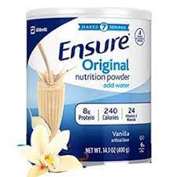
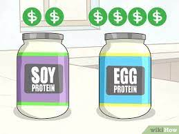

Serial No. |
Image |
Facts |
1 |
|
Protein supplements are increasingly used by older people to maintain nutrition and prevent or treat loss of muscle function. Daily protein requirements in older people are in the range of 1.2 gm/kg/day or higher. Many older adults do not consume this much protein and are likely to benefit from higher consumption. Protein supplements are probably best taken twice daily, if possible soon after exercise, in doses that achieve protein intakes of 30 gm or more per episode
|
2 |
 |
is probably not important to give these supplements between meals, as we have shown no suppressive effects of 30 gm whey drinks, and little if any suppression of 70 gm given to older subjects at varying time intervals from meals. Many gastrointestinal mechanisms controlling food intake change with age, but their contributions to changes in responses to protein are not yet well understood.
|
3 |
 |
There may be benefits in giving the supplement with rather than between meals, to achieve protein intakes above the effective anabolic threshold with lower supplement doses, and have favourable effects on food-induced blood glucose increases in older people with, or at risk of developing, type 2 diabetes mellitus; combined protein and glucose drinks lower blood glucose compared with glucose alone in older people.
|
4 |
 |
For reasons outlined above, recent recommendations for total daily protein intake in healthy older people are usually in the range of 1–1.5 gm/kg per day. The European PROT-AGE study group, for example, has recommended 1.0–1.2 gm/kg dietary protein for healthy older adults [11]. Others have suggested that even higher intakes (>1.2 gm/kg/day) are needed for maintenance of muscle mass and function [10]. Even higher intakes than these are likely to be needed at times of catabolic stress owing to acute or chronic illness, with the PROT-AGE group recommending 1.2–1.5 g/kg/day for those with acute or chronic illness, and up to 2.0 gm/kg/day for those with severe illness or injury or with marked malnutrition [11].
|